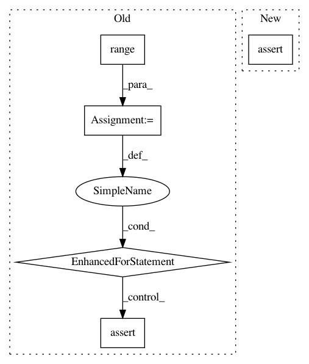

97eacce6d9222a1c8579062d5dbb9d753655ee62,tests/layer/test_gcn_lstm.py,,test_lstm_return_sequences,#,93
Before Change
)
n_layers = len(gcn_lstm_model._layers)
n_gc_layers = len(gcn_lstm_model.gc_activations)
for i in range(n_gc_layers + 1, n_layers - 3):
assert gcn_lstm_model._layers[i].return_sequences == True
assert gcn_lstm_model._layers[n_layers - 3].return_sequences == False
def test_gcn_lstm_layers():
After Change
lstm_activations=["tanh"],
)
for layer in gcn_lstm_model._lstm_layers[:-1]:
assert layer.return_sequences == True
assert gcn_lstm_model._lstm_layers[-1].return_sequences == False
def test_gcn_lstm_layers():
In pattern: SUPERPATTERN
Frequency: 4
Non-data size: 5
Instances
Project Name: stellargraph/stellargraph
Commit Name: 97eacce6d9222a1c8579062d5dbb9d753655ee62
Time: 2020-06-01
Author: Huon.Wilson@data61.csiro.au
File Name: tests/layer/test_gcn_lstm.py
Class Name:
Method Name: test_lstm_return_sequences
Project Name: scikit-learn/scikit-learn
Commit Name: 3250ffb785fed45712868fd618929a3015639b1c
Time: 2020-07-16
Author: 34657725+jeremiedbb@users.noreply.github.com
File Name: sklearn/cluster/tests/test_k_means.py
Class Name:
Method Name: test_transform
Project Name: iskandr/fancyimpute
Commit Name: e2f51920215f2c3be39de713626d1288c607eb75
Time: 2015-12-28
Author: alex.rubinsteyn@gmail.com
File Name: test/test_auto_encoder.py
Class Name:
Method Name: test_rank1_auto_encoder
Project Name: scikit-learn/scikit-learn
Commit Name: 4f496868c6aa7f50db99229847285efbe50040c2
Time: 2020-08-03
Author: 34657725+jeremiedbb@users.noreply.github.com
File Name: sklearn/cluster/tests/test_k_means.py
Class Name:
Method Name: test_n_init